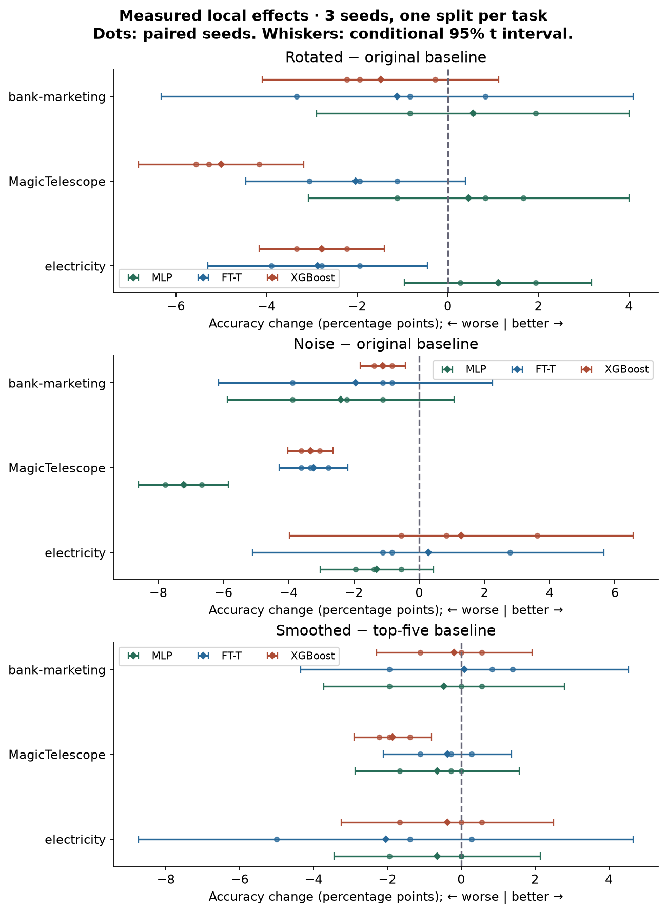

Year 2 · Quarter 2 · Lesson 051
Why trees still win
Re-derive three biases. Design the intervention that could expose each one.
Lesson 50 gave you a fair comparison. Now make the harder move: explain a performance difference with a controlled change to the learning problem. This matters for the relational thesis because a learned representation must beat a strong tabular baseline for a reason you can test.
Your tangible win: an intervention report that names what changed, what stayed fixed, the measured effect, and a conclusion the experiment cannot support. Start with the three worked examples; then complete the companion lab over one or more study sessions.
Recall before reading
1. A bias is a preference, not a prohibition
An inductive bias is the preference a learning procedure uses to choose among explanations compatible with limited training data. A neural network may be able to represent a jagged boundary yet fail to learn it with a particular optimizer, sample size, regularization and training budget. Expressivity describes what a model can represent; learning behavior describes what training actually finds.
Read Grinsztajn, Oyallon & Varoquaux (2022), §5 first. Its experiments connect neural/tree differences to irregular targets, irrelevant columns and feature orientation. They concern a defined tabular benchmark and specified training procedures, not an eternal ranking of model families. We reconstruct the interventions and test a new, explicitly local protocol.
| Hypothesis | Intervention | Required control |
|---|---|---|
| A learner misses short-range label variation | Smooth training targets | Keep evaluation labels and selected features fixed |
| A learner depends on named coordinates | Apply one rotation to all splits | Keep rows, labels and information fixed |
| A learner is sensitive to irrelevant inputs | Append independent noise columns | Retain original columns and their values |
Each intervention changes something other than “the model name.” A clean protocol lets us identify a response to that intervention; it does not prove that only one internal mechanism caused the response. This is a synthesis of L025, L026 and L027, with stronger controls. No new architecture is introduced.
2. Smoothness: remove local label variation
Smoothness means nearby feature vectors tend to have similar outputs. In a one-dimensional signal, high-frequency variation changes rapidly over short distances. A threshold tree can place a sharp jump at one coordinate value. A neural learner can favor broader changes during fitting; the primary theoretical and empirical discussion is Rahaman et al. (2019). This is a learning tendency, not a claim that ReLU networks cannot draw sharp boundaries.
Build a local average. Let xᵢ be training row i, yᵢ its binary label, C a covariance matrix fitted on training features, and h a nonnegative lengthscale. Covariance describes feature spread and joint variation; its inverse measures distance in units of that spread. The squared distance is d²ᵢⱼ = (xᵢ − xⱼ)ᵀ C⁻¹ (xᵢ − xⱼ). Give nearby rows weight wᵢⱼ = exp(−d²ᵢⱼ / (2h²)), then calculate pᵢ = Σⱼ wᵢⱼ yⱼ / Σⱼ wᵢⱼ. The denominator makes the weights sum to one. Thus the result stays between zero and one.
The query row is also its own neighbor: its distance is zero and its weight is one. At h=0 we explicitly return the original targets. For positive h, larger neighborhoods mix labels. In the pinned released classifier, the next step is new_y = (p > 0.5). A probability of exactly 0.5 becomes label 0. Our lab preserves this hard-label step.
Predict: for rows x=(0,1,2), labels y=(0,1,0), C=1, will the middle label survive at h=1?
At h=1 the weights into x=1 are approximately (0.607, 1, 0.607). Only the middle row contributes a positive label, so p=1/2.213≈0.452 and its label becomes 0. This is a computed synthetic example, not a reported dataset score.
What stays fixed in the lab: first select up to five features using training-only random-forest importance. Fit the covariance and transform on training rows. Compare unsmoothed and smoothed training labels on exactly those same columns; leave validation/test labels unchanged. Comparing full-feature raw data against five-feature smoothed data would confound smoothing with feature removal. The algorithm audit checks the released smoother on a nonsingular empirical-covariance example; the lab uses robust covariance with an explicit numerical eigenvalue floor. Neither check establishes full training parity.
3. Orientation: preserve information, change the easy boundary
An orthogonal matrix R satisfies RᵀR=I, where I leaves a vector unchanged. Our random rotations also have determinant +1. With rows stored in a matrix X, transform them as X′=XR. Since R⁻¹=Rᵀ, the inverse X′Rᵀ recovers X. Pairwise squared distances remain unchanged: ‖(xᵢ−xⱼ)R‖² = ‖xᵢ−xⱼ‖². Rotation mixes coordinates without removing information.
An axis-aligned split asks about one coordinate, such as x₀>0.4. After a general rotation, the same boundary depends on a linear combination of coordinates. A finite tree may need several rectangular regions to approximate it. At a 90° rotation, however, the axes merely exchange roles with a sign change: the boundary is easy again. Rotation angle is not a universal difficulty scale.
For a neural first layer, use row notation H = XWᵀ + b, with X shaped [rows, features], W [hidden units, features], and b [hidden units]. Choose W′=WR. Then (XR)(WR)ᵀ = XRRᵀWᵀ = XWᵀ. All later layers receive exactly the same H. This proves representation equivalence with transported weights.
It does not prove that independent training runs find those weights. Exact rotation-equivariant gradient-descent trajectories need transported initialization, corresponding minibatches, and compatible regularization. Adam rescales gradients coordinate by coordinate. For a first-step gradient (1,0), ignoring its small numerical epsilon, its normalized direction is (1,0). Rotate that gradient 45° and normalizing each coordinate gives (1,−1), while rotating the original update gives (0.707,−0.707). The updates differ. Our AdamW lab therefore measures approximate sensitivity and never demands identical trained predictions.
Protocol: Gaussianize each feature using training-only quantiles, then apply one seeded R to all three splits. Do not fit another per-coordinate scaler after rotation: it changes the transformation you intended to test. A fresh matrix per split would instead create mismatched coordinate systems. Per-feature tokenization in FT-T treats named coordinates separately, so it does not inherit the dense-first-layer argument as a whole-model guarantee.
4. Irrelevant columns: separate “no signal” from “no harm”
A feature is uninformative about the target if observing it adds no predictive information in the population. Generate new values independently of rows and labels to construct that condition. Population independence does not force a finite sample correlation to be exactly zero. More columns create more chances to find a spurious pattern.
A tree searches thresholds and selects a split with large training improvement. For a binary node with positive fraction p, Gini impurity is 2p(1−p): zero for a pure node and 0.5 for a balanced one. Split gain is parent impurity minus the child impurities weighted by their row counts. The widget searches all between-row thresholds in 32 fixed synthetic training labels. Each new noise column adds another candidate maximum.
The maximum observed gain can only stay the same or increase as candidates are added. Trees therefore can overfit irrelevant features; their robustness is empirical and depends on sample size, depth and regularization. An MLP with H first-layer units gains H parameters per extra input. That is an accounting fact, not a theorem that its test score must fall or that it cannot learn zero weights.
Protocol: append 2d independent standard-Gaussian columns to a d-column input, making 3d columns. Use different draws for train, validation and test while keeping the same column interpretation. The figure-caption distribution and the released code are not identical: the code matches sampled training-column means and interquartile scales. Our experiment explicitly follows the standard-normal description and records the difference. Noise features are not the same as redundant features: a duplicate of a useful column can still predict the target.
The link to orientation is instructive: if useful information resides in a small set of named columns, a method that exploits that basis can search for those columns directly. After dense mixing, the same signal may be spread over many coordinates. This motivates a testable hypothesis, not a universal rule for all tabular learners. See Ng (2004) for the conditional worst-case sample-complexity result.
5. The local experiment you will reconstruct
Implementation scope: key parts. You implement smoothing, consistent rotation, independent noise insertion and paired effects. The notebook displays the complete numeric MLP and FT-T reused from L050, together with the train loop. XGBoost is an existing packaged baseline. This lesson tests intervention mechanisms; it does not introduce or reimplement a new booster.
Data: the authors’ January 2023 numeric-classification release, OpenML suite 337: electricity (44120), MagicTelescope (44125) and bank-marketing (44126). Each local task takes 1,800 rows selected without inspecting labels, then stratifies them into 60/20/20 training/validation/test partitions with split seed 51. Model seeds are 0, 1 and 2. The source paper read here is v1 from 2022, so this later dataset release is a named fidelity difference.
Preprocessing: fit QuantileTransformer only on training rows. It maps each value’s training percentile to the corresponding standard-normal quantile, making marginal feature distributions approximately Gaussian. Smoothing uses a training-only top-five ranking, MinCovDet robust covariance, h=0.5 and hard labels. MinCovDet estimates covariance from a central subset to reduce outlier influence. An eigenvalue measures spread along a covariance direction; flooring very small eigenvalues makes its inverse numerically usable. The eigenvalue floor prevents numerical singularity; the resulting matrix is saved, and covariance warnings are recorded in the executed solution. Transformation seed 51 is fixed across model seeds. There is no claim about uncertainty across fresh rotations or noise realizations.
Training: two-hidden-layer width-64 MLP; numeric d=32, two-block, four-head FT-T with ReGLU; depth-4 XGBoost. Neural caps are 20 epochs, tree cap 120 rounds, with patience 12 on validation loss. Neural batch size is 256, AdamW learning rate 0.001 and weight decay 10⁻⁵. Tree learning rate is 0.05, row subsampling 0.8. Fixed recipes isolate sensitivity under these procedures; they do not allocate equal wall-clock budgets or reproduce the paper’s hyperparameter searches. We restore the best validation checkpoint before test evaluation.
Metric: accuracy, the fraction of correct binary predictions at threshold 0.5; AUROC, the probability that a randomly chosen positive is ranked above a randomly chosen negative (with half credit for ties), is also saved. An effect is changed-condition accuracy minus its matched baseline. Rotation and noise use “original”; smoothing uses “top5.” A negative effect means the intervention hurt that arm.
Each mean ± sample standard deviation describes three training seeds on one shared split. Paired 95% t intervals subtract matched seeds before estimating variability; they are conditional seed intervals, not confidence about future datasets. Within a dataset, rank 1 is best and ties share an average rank. The Friedman test asks whether model ranks differ systematically across datasets; the Nemenyi critical difference (CD) is the rank separation needed for its pairwise comparison. Dataset-level mean ranks, a Friedman test and a Nemenyi critical difference are descriptive safeguards with only N=3 tasks. Five intervention conditions do not create fifteen independent datasets. The statistical rationale is Demšar (2006).
6. Read the evidence without repairing the story
Author measurement: 119 seconds for the local CPU experiment. Accuracy ± sample SD across three seeds; the table contains local evidence, not paper targets.
| Dataset | Condition | MLP | FT-T | XGBoost |
|---|---|---|---|---|
| electricity | original | 0.7389 ± 0.0073 | 0.7685 ± 0.0098 | 0.7889 ± 0.0073 |
| electricity | rotated | 0.7500 ± 0.0028 | 0.7398 ± 0.0098 | 0.7611 ± 0.0028 |
| electricity | noise | 0.7259 ± 0.0137 | 0.7713 ± 0.0131 | 0.8019 ± 0.0140 |
| electricity | top5 | 0.7463 ± 0.0016 | 0.7713 ± 0.0064 | 0.7815 ± 0.0042 |
| electricity | smoothed | 0.7398 ± 0.0105 | 0.7509 ± 0.0264 | 0.7778 ± 0.0083 |
| MagicTelescope | original | 0.8019 ± 0.0064 | 0.8093 ± 0.0064 | 0.8157 ± 0.0058 |
| MagicTelescope | rotated | 0.8065 ± 0.0143 | 0.7889 ± 0.0121 | 0.7657 ± 0.0064 |
| MagicTelescope | noise | 0.7296 ± 0.0032 | 0.7769 ± 0.0105 | 0.7824 ± 0.0080 |
| MagicTelescope | top5 | 0.7907 ± 0.0032 | 0.7907 ± 0.0058 | 0.8111 ± 0.0000 |
| MagicTelescope | smoothed | 0.7843 ± 0.0105 | 0.7870 ± 0.0105 | 0.7926 ± 0.0042 |
| bank-marketing | original | 0.7935 ± 0.0098 | 0.7926 ± 0.0112 | 0.7889 ± 0.0073 |
| bank-marketing | rotated | 0.7991 ± 0.0116 | 0.7815 ± 0.0105 | 0.7741 ± 0.0032 |
| bank-marketing | noise | 0.7694 ± 0.0127 | 0.7731 ± 0.0098 | 0.7778 ± 0.0083 |
| bank-marketing | top5 | 0.7843 ± 0.0070 | 0.7880 ± 0.0179 | 0.7870 ± 0.0042 |
| bank-marketing | smoothed | 0.7796 ± 0.0143 | 0.7889 ± 0.0000 | 0.7852 ± 0.0042 |
Rotation effects averaged equally over the three tasks: MLP +0.71 percentage points, FT-T -2.01 percentage points, XGBoost -3.09 percentage points. These are task averages, not nine independent task observations.
For added noise, electricity XGBoost rises while its other two task scores fall. Smoothing changes electricity: 125/1080, MagicTelescope: 74/1080, bank-marketing: 138/1080 training labels. FT-T improves slightly on smoothed bank marketing while the other smoothing effects are negative. These exceptions belong in the report.

Original-condition Friedman p=0.717. The noise condition has unadjusted asymptotic p≈0.0498, but it is one of five exploratory tests on only three tasks; it does not survive a Bonferroni threshold of 0.01. Do not use this isolated threshold crossing as the conclusion.
The smoothing comparison estimates the effect of changing training labels, not the benefit of deploying a smoothed target. A flat response can mean robustness, weak smoothing, early stopping or low power. Inspect the number of training labels actually changed before choosing an explanation. A rotation penalty can expose coordinate sensitivity while leaving the model’s absolute accuracy competitive.
For the mission, this raises the baseline standard: before interpreting an RDL gain, ask whether its representation changed feature orientation, removed irrelevant inputs, exposed temporal information, or preserved detail that flattening discarded. This tabular experiment itself supplies no direct evidence that a relational model wins.
7. Build, check, explain
Download the student notebook · Read the prepared notebook · Run in Colab after repository publication. The lab includes portable figures, four live TODO functions, diagnostic CHECKs, measured author snapshots, your runtime plots and an EXIT ticket.
- Implement weighted smoothing and its binary threshold. Check a three-row calculation and a change of measurement units.
- Rotate every split consistently. Recover original rows and transport a neural first-layer weight matrix.
- Append independent noise without changing the original block. Explain why exact zero sample correlation is the wrong CHECK.
- Pair changes with the correct baseline, train all three tasks, and report effects with conditional uncertainty.
EXIT: paste the printed report plus one paragraph per bias: intervention; fixed quantities; observed effect; limitation. Explain why “the MLP moved after rotation, so the algebra was wrong” and “trees are immune to junk” are both invalid conclusions. Completion is judged from your explanation and output, not the author’s reference scores.
8. Required next step: increase evidence, preserve the verdict
The closer preset expands each released task to 6,000 rows, 50 neural epochs and 400 tree rounds, retaining three model seeds and all five conditions. The paper resource preset uses up to 20,000 rows, 100 epochs, 1,000 trees and five seeds. Its name denotes scale: it still lacks the original suite, model roster, search distributions, repeated search orders and aggregation. Neither preset is an exact paper reproduction.
Larger attempt completed: 2471 seconds for the CPU experiment over all three tasks and five conditions. Original-condition accuracy means ± sample SD over three seeds — electricity: MLP 0.8003 ± 0.0038, FT-T 0.8192 ± 0.0065, XGBoost 0.8539 ± 0.0032; MagicTelescope: MLP 0.8506 ± 0.0038, FT-T 0.8481 ± 0.0043, XGBoost 0.8578 ± 0.0013; bank-marketing: MLP 0.7883 ± 0.0025, FT-T 0.8047 ± 0.0049, XGBoost 0.8139 ± 0.0013. INCOMPARABLE to the paper; the full resource preset and original search curves remain NOT_RUN. Full scale-up evidence, paired effects and ledger. The timing includes heavy workspace CPU contention and is not a model-speed comparison.
Local command: python labs/_paper_repro_l051.py --preset closer --out labs/data/cache/l051-your-run. For T4 compute: modal run --detach modal/l051_paper_repro.py --preset closer, or enable the notebook’s gated cell. Both use the same visible implementation. Resume occurs at completed-dataset boundaries; a partly completed dataset restarts. Source, data, configuration and environment changes require a new output directory.
Missing suite coverage includes credit, covertype, pol, house_16H, MiniBooNE, Higgs, eye_movements, Diabetes130US, jannis, default-of-credit-card-clients, Bioresponse, california and heloc. The smoothing-lengthscale curves, feature-removal sweep and full search-reordering experiment remain unrun. Electricity is evaluated under this benchmark’s IID partition, not a deployment-time forecast.
Reproduction contract and source audit · Local evidence · Modal operator
Reading and next session
Primary reading: Grinsztajn et al., §5 and Appendix A.4. Read the released transformations alongside the equations. Keep the intervention reference card for future model comparisons. Next: Lesson 052 — TabR, where retrieval becomes part of prediction.